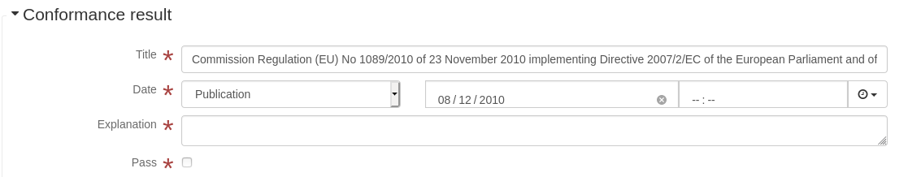
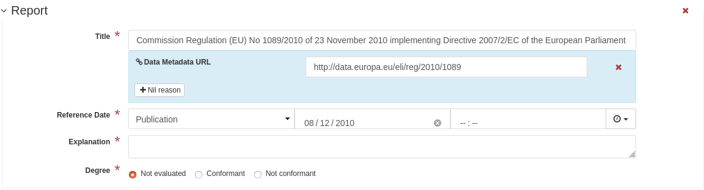
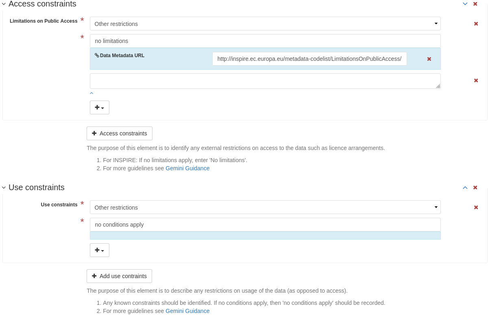
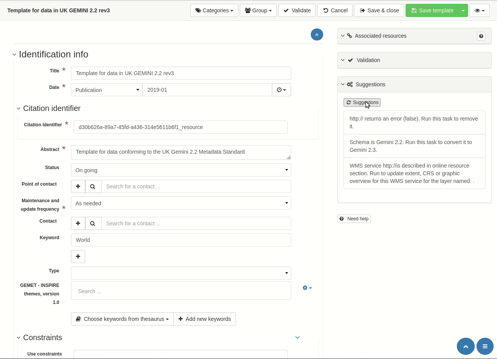
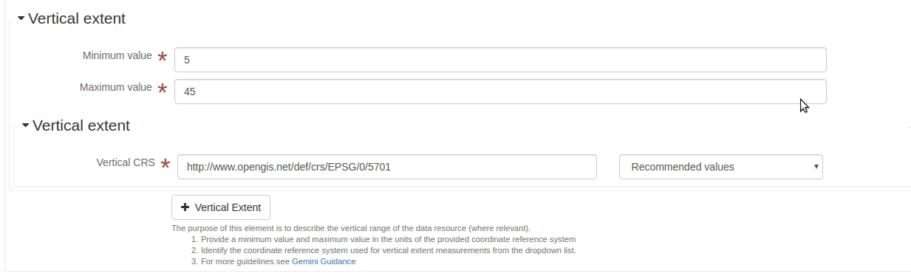

Presented by Jo Cook, Astun Technology
I'm the lead metadata consultant for Astun Technology
Astun are a small firm, with 20 staff. We're based in Epsom, Surrey, but have staff spread across the UK and abroad.
We provide web-based GIS products, services, and training to local authorities, government departments, devolved government, and commercial firms. These include mapping, databases, and metadata portals, all based on an open source geospatial stack
We manage metadata portals for DEFRA and the Environment Agency, Scottish Government, and a number of local authorities.
This involves a lot of training, metadata wrangling, and integration with multiple other services
While supporting our metadata clients we have developed a plugin for the GEMINI 2.3 Metadata specification for the GeoNetwork catalog.
It's open source, and available at metadata101 and GitHub and works with most recent GeoNetwork versions.
More than just the xsd and schematron!
Creating a plugin allows you to build a custom editing layout, allows you to create and store valid metadata in different standards (eg Gemini 2.2 and 2.3) and to convert from one to the other.
It also allows you to define custom xsl processes to help with validation, quality and management (more later).
Throughout this process, I've learnt a lot about the complexity of implementing a standard!
I've also gained some insights into the way people interact with the standard "IRL", and consequently have included some features in the plugin to hopefully help them create valid, high-quality metadata
By the time we get to GeoNetwork we're a couple of steps removed from the standard, both temporally and conceptually
Every one of these steps introduces complexity and design decisions, in particular getting towards something people can interact with.
A simple example of this when checking for conformance against a data quality specification. In ISO19115:2003 this is defined as a boolean and hence traditionally displayed in a User Interface using a check box. Checked means a pass result, and unchecked means a fail.
In INSPIRE TG:2017 and Gemini 2.3:2018 a third result is allowed: not evaluated. Simple check boxes can't convey the difference between a fail and "not evaluated" so we have to use a different approach.
Very few users have the time and training to refer to the standards documentation when creating metadata.
So it's up to the profile plugin to provide them with guidance and utilities to help them do this.
Here are a few of those ways...
We've enhanced the GEMINI 2.3 editing interface with snippets about each element, links to the definitive guidance, and buttons for adding complex elements.
We're using the GeoNetwork "suggestions wizard" to allow users to convert GEMINI 2.2 records to GEMINI 2.3, with one click.
We're using another feature called "inflate-metadata" to automatically insert missing or inadvertently deleted mandatory elements
Metadata profile plugins can include additional enhancements that are not related to the standard as such, but help with data quality, and discoverability.
A recent UK Geospatial Commission report advised data providers to utilise Search-Engine Optimisation techniques to ensure their datasets are discoverable and "highly ranked", and to include structured data to ensure that search engines can display results in a richer way.
In work funded by the Scottish Government to address these findings, one of the things we've done is to add schema.org structured data tags for metadata records.
This is now included in the GEMINI 2.3 Metadata Profile Plugin